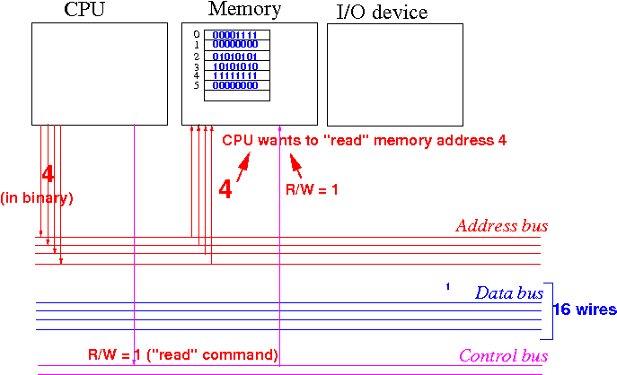

- Recall from above:
- The databus (= wires) are used
to transfer the
data bits (binary digits)
between the CPU and memory
Example: data stored in memory address 4 (11111111 00000000) is transfered over the data bus to the CPU

Important Physical fact:
- Each bit of the data
must be transfered
on a different wire of the
data bus !!!
(When you send more than 1 electrical signal on a wire, it cause a short circuit !)
- The databus (= wires) are used
to transfer the
data bits (binary digits)
between the CPU and memory
- Width of
the databus:
- Width of the
databus =
# wires used in the
data bus
(The more wires you use, the more costly the computer system will become - it's like the number of lanes in a high way system
- Width of the
databus =
# wires used in the
data bus
- Effect of
the width (= number of wires) of the
databus:
- A databus that consists of
8 bits, can transfer
1 byte of data
per read/write operation
- A databus that consists of
16 bits, can transfer
2 bytes of data
per read/write operation
- A databus that consists of
32 bits, can transfer
4 bytes of data
per read/write operation
- And so on
- A databus that consists of
8 bits, can transfer
1 byte of data
per read/write operation
- Conclussion:
- The width of the
data bus determines the
amount of data transfered
per
memory transfer operation
- The wider (= more wires) the
the daate bus, the
more data you can
transfer
per time unit (second)
That will result is a faster running computer
(The width of the databus is analogous to the # lanes on the high way: the more lanes (= more wires), the more cars (more bits) you can transfer per time unit)
- The wider (= more wires) the
the daate bus, the
more data you can
transfer
per time unit (second)
- The width of the
data bus determines the
amount of data transfered
per
memory transfer operation
- Current trend:
- All computers made in 2019 has
64 bits
databuses
(64 bit machine)
- Back in 2012, computers used to have 32 bits data buses
Note:
- Databus width is
always a
power of 2
(Because of the technology reason that result in the alignment requirement....)
- All computers made in 2019 has
64 bits
databuses
(64 bit machine)
- Recall from above:
- The address bus (= wires) is used
to send the
address (location) information
to memory
Example: when the CPU want to read data stored in memory location (address) 4, the CPU sends the value 4 (in binary - explained later) on the address bus

- The address bus (= wires) is used
to send the
address (location) information
to memory
- Effect of
the width of the
address bus:
- Each wire of the
address bus can
convey (= transfer) 1 bit of the
address
Therefore:
- An address bus that contains n wires can convey n bits
- Each memory byte is
identified by
a unique memory address !!!
So:
- A address bus that consists of
8 wires (= bits), can
convey
28 (= 256) different addresses
- A address bus that consists of
16 wires (= bits), can
convey
216 (= 64K) different addresses
- The Apple II PC has
a 16 bit address bus and
has maximum 64 K byte RAM memory
Wikipedia: click here
- The Apple II PC has
a 16 bit address bus and
has maximum 64 K byte RAM memory
- A address bus that consists of
24 wires (= bits), can
convey
224 (= 16M) different addresses
- A address bus that consists of
32 wires (= bits), can
convey
232 (= 4G) different addresses
- If your PC has 8 G byte memory, then your PC has an address bus that contain at least 33 wires (bits) because 233 = 8,589,934,592 (~= 8 × 109 = 8 G byte)
- And so on
- A address bus that consists of
8 wires (= bits), can
convey
28 (= 256) different addresses
- Each wire of the
address bus can
convey (= transfer) 1 bit of the
address
- Conclussion:
- The width of the
address bus determines the
size of the memory
that the computer can use
- The wider the
address bus, the
more memory a
computer can
use.
(More memory allows the computer to store more data and solve larger size problems, e.g., sort more data)
- The wider the
address bus, the
more memory a
computer can
use.
- The width of the
address bus determines the
size of the memory
that the computer can use
- Current trend:
- All PCs has at least
33 bits
address buses and can use
8 G byte memory
- Some (high end) PCs has more than 34 or 35 bits address bus and can use maximum 16 or 32 GBytes memory
Famous (last) quote:
- "When we set the upper (memory) limit of PC-DOS at
640K, we thought nobody would
ever need that much memory." (1985)
William Gates, chairman of Microsoft
- All PCs has at least
33 bits
address buses and can use
8 G byte memory